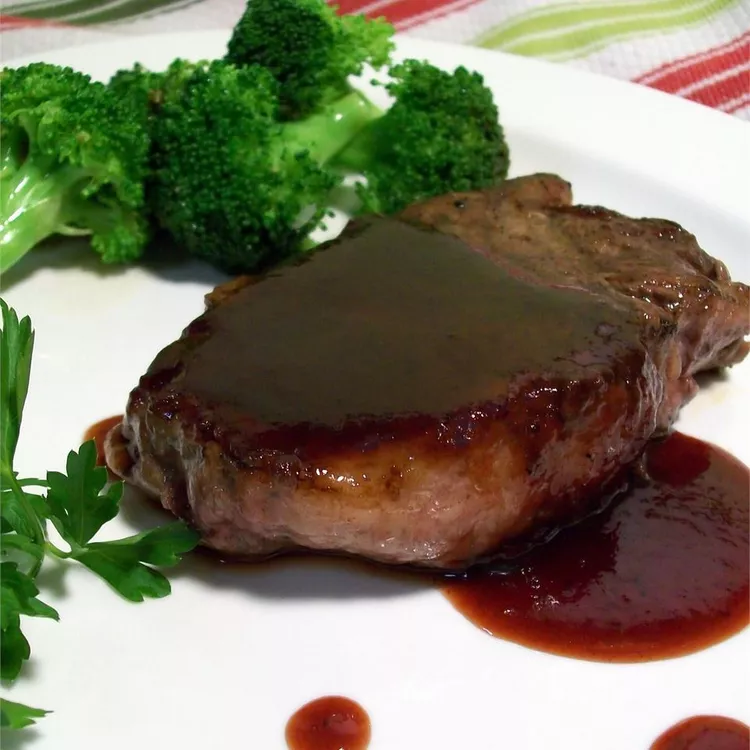

Moshiach's Steak Sauce

Description
A brilliant steak sauce that really brings out the flavor of any type of grilled steak. It's best with eye fillet or Scotch steaks. Raspberry jam is the wildly inventive twist that really makes this sauce unique.
This recipe takes 10 mins to prep, 15 mins to cook, for a total time of 25 minutes
Makes 1/2 cup which is about 4 servings
Ingredients
- 2 tablespoons raspberry jam
- 2 tablespoons brown sugar
- 2 tablespoons Worcestershire sauce
- 2 tablespoons tomato sauce
- 2 tablespoons malt vinegar
- 5 drops hot pepper sauce
- salt and freshly ground black pepper to taste
Steps
- In a saucepan over high heat, blend raspberry jam, brown sugar, Worcestershire sauce, tomato sauce, malt vinegar, hot pepper sauce, salt, and pepper. Bring to a boil over high heat, reduce heat to low, and simmer 10 minutes, or until thickened.